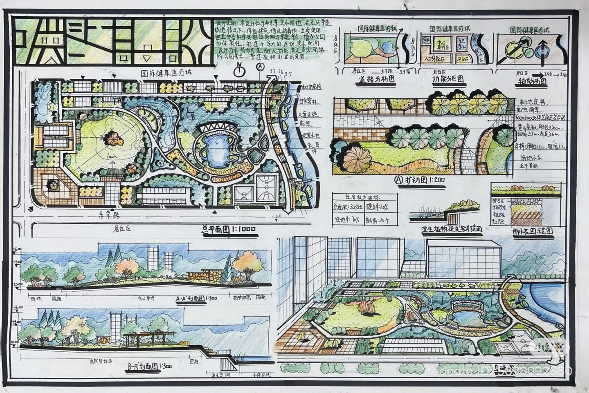

Under Review / Sustainable Cities and Society
Unmasking the Compact City Paradox
Graphical abstract direction: multi-sectoral carbon flux attribution, LULUCF carbon legacy, luminous-thermal decoupling, and financialized carbon hotspots.
Graphical Abstracts
Under Review / Sustainable Cities and Society
Graphical abstract direction: multi-sectoral carbon flux attribution, LULUCF carbon legacy, luminous-thermal decoupling, and financialized carbon hotspots.
Under Review / Climate Policy
Graphical abstract direction: capitalized rent barriers, justice-oriented optimization, Pareto frontier, and the non-linear shadow price of environmental equity.
Under Review / Open House International
Graphical abstract direction: global HPM evidence, elasticity standardization, three-level random-effects modeling, heterogeneity testing, and nature capitalization.
Macro-control totals are constrained first, then allocated through physical urban structure.
Macro-Control Inputs
Spatial Allocation Mechanics
30m Grid Output
Core Question
Where do macro emissions concentrate after the city is reconstructed as fine-grained spatial evidence?Compact City Paradox Model
This prototype should feel like a research framework diagram, not a dashboard: it shows how source sectors, biophysical sinks, built form, roads, and parcel attributes become a 30m carbon surface.
All values are synthetic. The point is to communicate a method: translating city-scale carbon into fine-grained spatial evidence.
Climate Justice Method Demo
This synthetic demo follows the manuscript method logic: screen high-carbon, low-resistance parcels, assign intervention choices, and search for a knee point between carbon-sink efficiency and Rawlsian equity.
This is a public method sketch inspired by SMCS, LCA intervention options, NSGA-II search, and knee-point diagnosis. It does not expose manuscript data or results.
Urban Nature Meta-Analysis Demo
This demo converts the review method into an interaction: screen studies, standardize coefficients into elasticity, then explore how moderators reshape the capitalization signal in housing markets.
The visual abstracts the manuscript's meta-analytic workflow: identification, quality screening, elasticity standardization, moderator analysis, and sensitivity checks.
About Me
I am a second-year graduate student in Landscape Architecture at the School of Landscape Architecture, Nanjing Forestry University.
My research addresses the socioeconomic impacts of climate change and environmental shocks. I am dedicated to leveraging spatial data science and econometric models to evaluate the efficiency of environmental policies and climate adaptation strategies.
My advisor is Prof. Huilin Liang from the School of Landscape Architecture, Nanjing Forestry University.
I am currently seeking Research Assistant opportunities and prospective PhD pathways focused on climate economics and environmental public policy.
Undergraduate / 2019-2024
Graduate / 2024-2027
Research
High-resolution carbon accounting, spatial downscaling, and metabolic typology diagnosis.
Efficiency-equity trade-offs, shadow prices, and justice-oriented urban intervention pathways.
Hedonic pricing, global meta-analysis, and economic valuation of nature-based solutions.
Research Experience


.png)
Personal Works


Hand-drawn Works
Selected Sketches and Personal DrawingsHonors
National College Student Innovation and Entrepreneurship Training Program.
"Climbing Program" Special Funds for Guangdong College Students' Scientific and Technological Innovation.
The 9th Guangdong University Architecture and Environment Art Design Exhibition.
Guangdong Environmental Art Design Awards.
The 5th China International "Internet+" Innovation and Entrepreneurship Competition.
Huizhou University Scholarship and Student Honor.
Projects
A community revitalization plan for Jinxing Village based on multi-resource orientation.
Future project slot for translating spatial climate research into policy evaluation and adaptation strategies.
Future project slot for graphical abstracts, research diagrams, and data-driven visual narratives.
Skills
Python, R, ArcGIS Pro, GEE (Google Earth Engine), Rhino, Photoshop, Adobe Illustrator.
Mainly includes Hedonic Pricing Model, MGWR (Multiscale Geographically Weighted Regression), and Meta-analysis.
Mainly includes NSGA-II Evolutionary Algorithm, Pareto Frontier Analysis, and DTW spatiotemporal clustering analysis.
Sectoral urban carbon-emission accounting and high-resolution spatial downscaling of city-level carbon totals.
Timeline
Graduate study in Landscape Architecture.
Received an Excellence Award in local practice and a Bronze Award in a provincial graduation design exhibition.
Undergraduate institution.
Contact